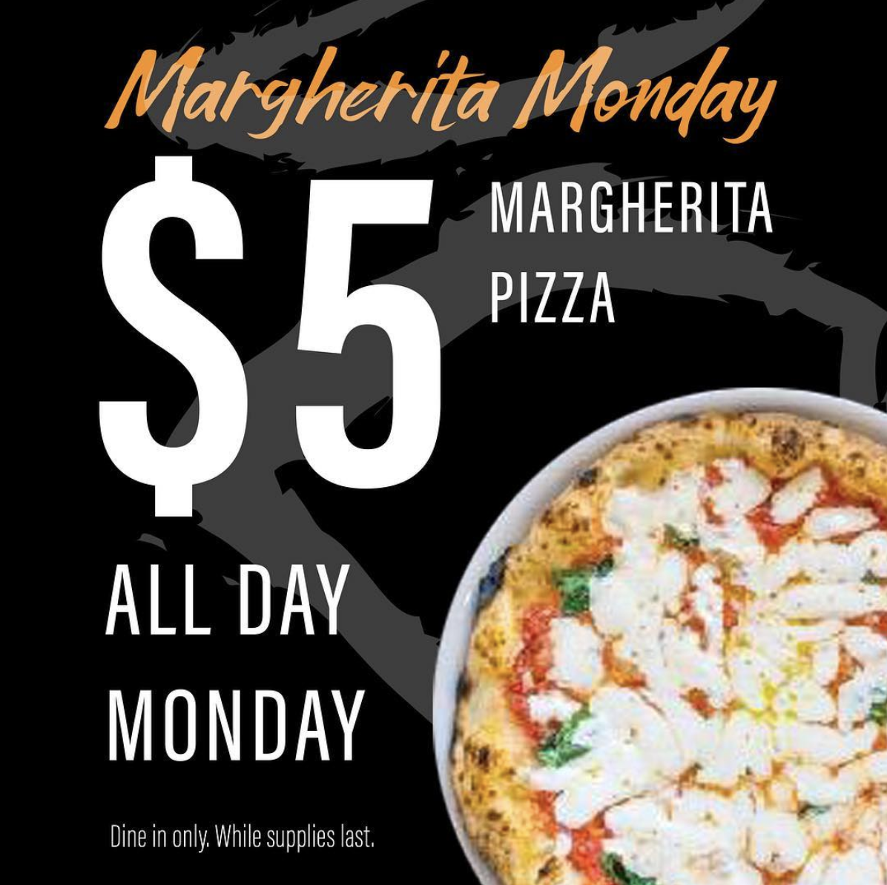
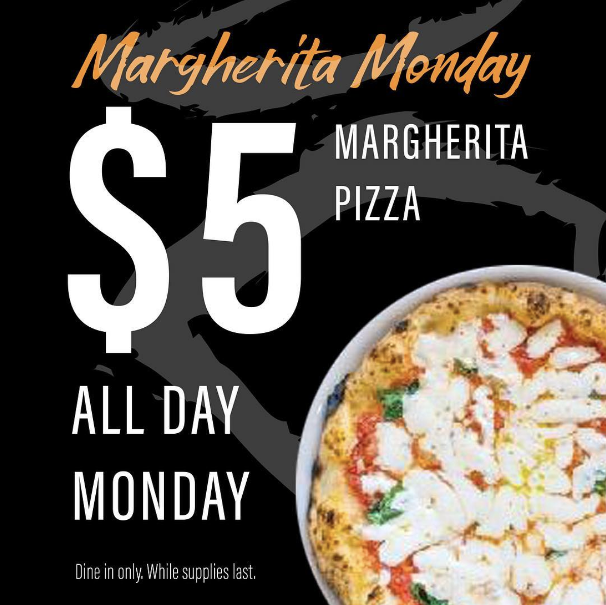

Graphic Design for Righteous Slice
Righteous Slice is a restaurant that serves traditional Neapolitan Pizza. I became the company's head graphic designer when they opened and developed their brand from what they already had (a logo and color scheme) to an identity.


Signage and Atmosphere
Projects included interior and exterior signage as well as designs for vinyl and paint. Much of what I designed as drafts were later implemented into the interior.

Working On Teams
The iconic graffiti work there was originally designed by my input and specifics and was later executed by the graffiti artists.

Promotions & Campaigns
My projects included several marketing campaigns including an annual holiday sweepstakes. Included in these larger campaigns were envelopes, cards, stickers, stamps, posters, table-toppers, and social media images.

Print & Digital
The project above later was compiled into a booklet for the customer to use as a punch card booklet for coupons. Print as well as digital designs were needed. Digital designs always included social media images like some below.
 



My Time At Righteous Slice
Overall, I felt that the identity I helped to produce for the brand became vital to their company and helped shape the influence the place had on the customers.